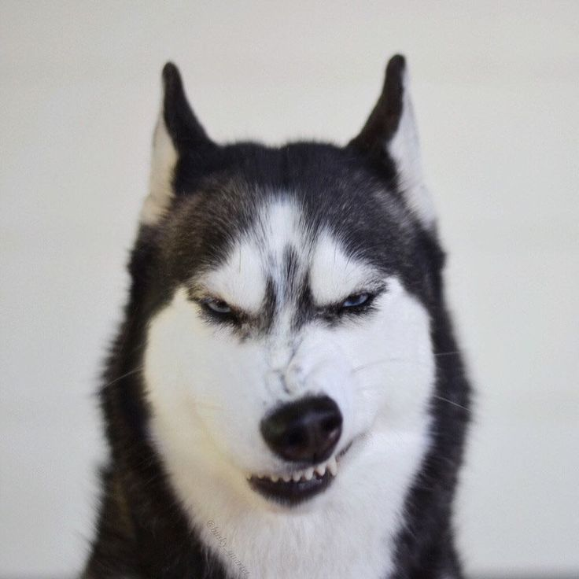
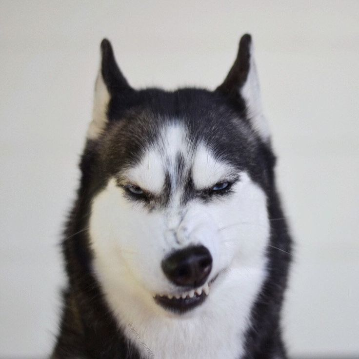
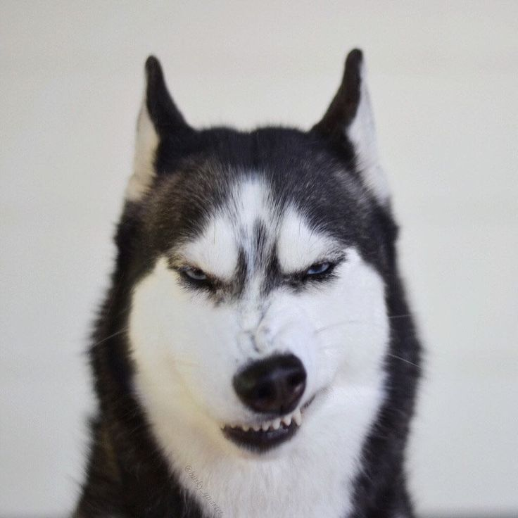

Кратко о породе:
Такса – это удивительная собака с необычной узнаваемой внешностью и высоким интеллектом.
Ее коротколапое вытянутое тело часто вызывает умиление. Это умное, активное и веселое животное,
которое стало любимцем многих собаководов. Таксы относятся к охотничьим породам,
но легко уживаются в городской квартире, становясь компаньоном и преданным другом.
